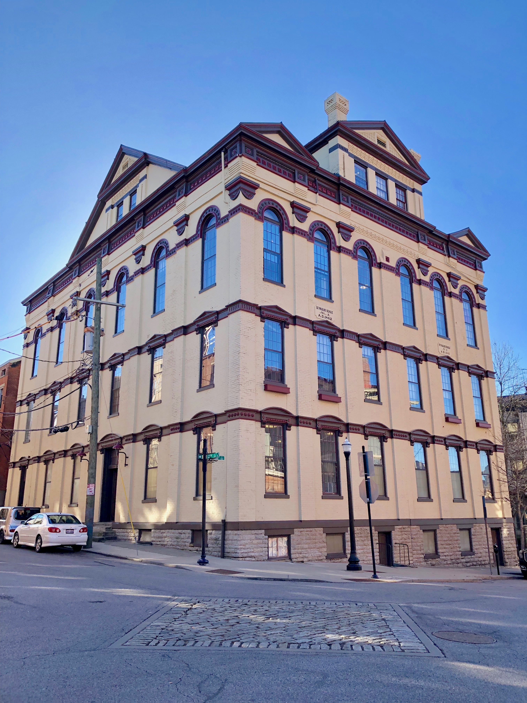
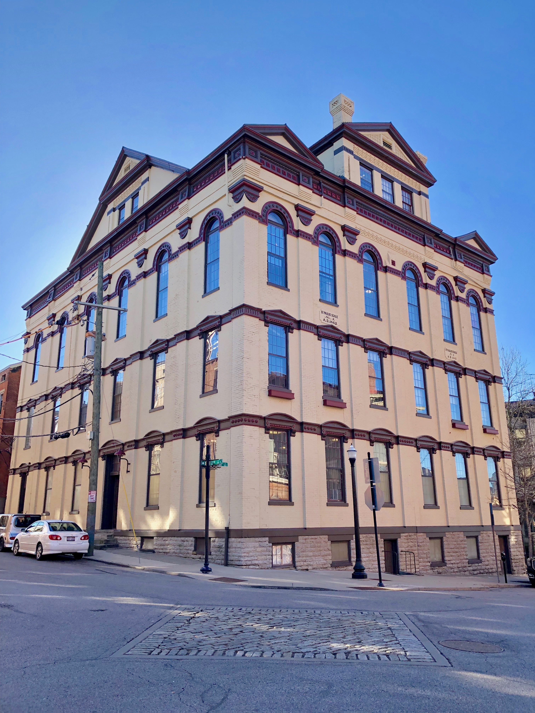

China

- Current Head: Peng Wei
- Website
United States

- Current Head: Brock Winstead
- Website
China
|
United States
|
Maeltopia Publishing HouseThe Maeltopia Publishing House has been a valued research partner of The Magnus Institute since its founding in 1972. As part of our organisation’s ongoing efforts to document and study any and all texts of an esoteric nature, the publisher has proved invaluable in identifying and securing the rights to several unique texts and subsequently sharing with us those which are not deemed suitable for broader publication. For more information about the Maeltopia Publishing House, click here. |
The Cryptid CasesOur newest affiliate is the highly respected academic journal The Cryptid Cases. While the majority of their dissertations and research papers are focused on occurrences and apparitions in North America, several of our own researchers have had work printed in the esteemed publication. For more information about The Cryptid Cases, click here. |
Nicholas ScholarshipThe Magnus Institute is excited to partner with the Nicholas Scholarship Fund, an organisation celebrating and promoting further education among those coming from disadvantaged backgrounds. The Nicholas Scholarship was established in the 19th Century by an anonymous benefactor in Paris, who wished for education to be freely available for all, especially those living in concentrated areas of high poverty. Those who hold the Nicholas Scholarship will also be required to undertake a 12-month internship with The Magnus Institute as part of an industrial placement year. Interns will choose three four-month rotations from the following departments: Accounting, the Archives, Artifact Storage, HR, Legal, Research. Additionally, if the scholar is awarded a degree with a suitably high classification, scholars may automatically receive an offer of a graduate position at the Institute. To qualify, you must:
The ideal candidate will also:
* Unfortunately, the Nicholas Scholarship is no longer awardable to prospective students of Sapienza University of Rome, Italy or Shoin University, Japan. We apologise for the inconvenience. ^ If your application is successful, the Nicholas Scholarship will fund:
To request more information about the Nicholas Scholarship programme or download an application form, click here. |
Tangerine ScholarshipThe Tangerine Scholarship Foundation is honored to announce its inaugural round of funding for those interested in learning to become auditory artists. Auditory artistry can range from music composition to vocal editing, and anything else that artists have the audacity to explore. The Foundation was originally created by benefactors Viola and Burt ‘Beeps’ Marc. Viola Marc, born Viola Fuffo, was the heiress to the Fuffo Confection Company fortune, the company that popularised jelly bean candy throughout the United Kingdom. (Please see Growth and Development of the Gelata Faba by Carlton Butterbaum* for additional jelly bean history and lore). Not to be outdone, Burt ‘Beeps’ Marc brought his own money to the family as a world-renowned athlete in the marble circuit. Mr. and Mrs. Marc frequently talked of dreams where they would be able to inspire the next generation of auditory artists. The Marcs solidified their plans one fateful evening, huddled next to their old, rusty fridge whilst eating tangerines. Hence, the name and mission of the Tangerine Scholarship Foundation was born into the world. The Tangerine Scholarship is open to Yorkshire applicants only. For application purposes, Yorkshire is merely a state of mind and applicants are welcome from all three time zones. If you are wondering if you are in the Yorkshire state of mind, simply ask yourself, ‘Ey up?’ Whilst the Foundation welcomes applications from lads and blokes (of all genders), special consideration is given to those who can demonstrate of a history of any or all of the following actions and beliefs:
Scholarship winners will be funded for an entire year of hands-on learning experiences. Course topics will include removing breaths and mouth sounds, creating hype crimes, and distributing a seemingly neverending supply of images in which their face has been placed over that of a more famous person. If you would like to apply to the Tangerine Scholarship Foundation, please send your name, favorite jelly bean flavor (mint apologists need not apply), and a VHS with your best Sean Bean impression to: Tangerine Scholarship Fund
*The sole copy of Growth and Development of the Gelata Faba by Carlton Butterbaum is securely located at The Magnus Institute, London. Please do not contact them for details on reading the book. All inquiries will be denied. ^ |